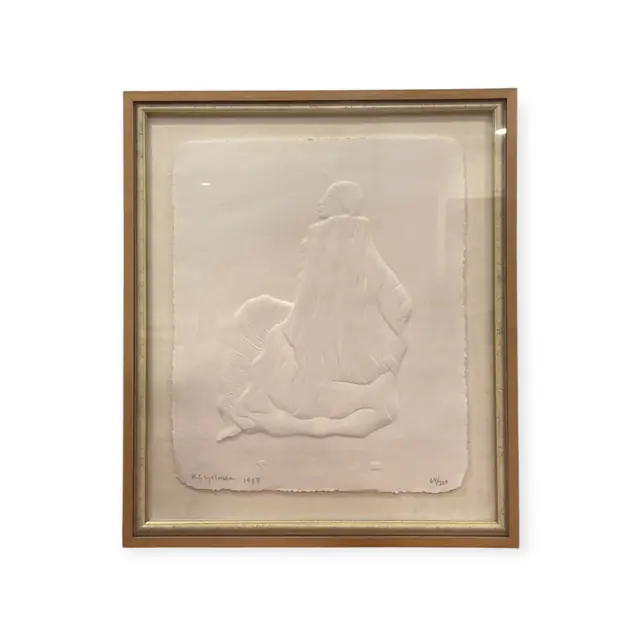
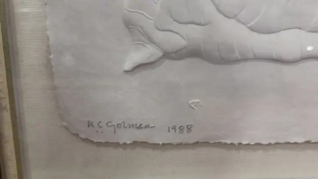
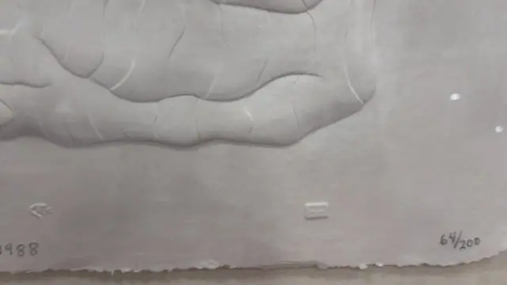
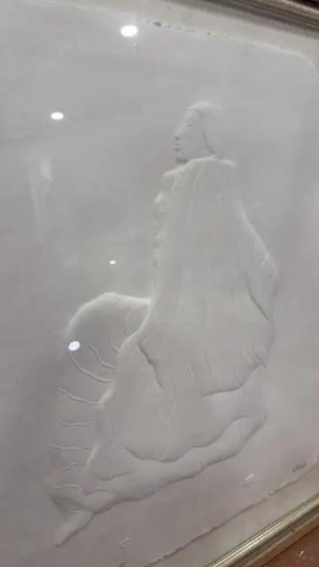
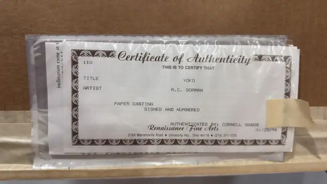

Handmade Objects
R.C. Gorman Cast Paper Relief 'Yoko', Numbered Edition, Framed, 1988
R.C. Gorman · 1988
Price Upon Request





About the Item
R.C. GORMAN. An entirely white cast-paper relief: a kneeling figure swathed in a deeply folded blanket, her head turned to show a serene profile and a long braid of hair. The whole image is modelled in raised and recessed paper - no pigment at all - so it reads purely through light and shadow across the ridged drapery folds. The sheet has a soft irregular deckled edge on all four sides and is floated on a cream linen-covered mat. Signed, dated and numbered in pencil along the lower edge. Medium: cast paper relief (handmade paper casting). Signed lower left of the sheet, in pencil, reading "R.C.Gorman 1988". Edition: 64/200, signed and numbered in pencil. Accompanied by a certificate: Typed certificate no. 110 dated 01/25/94 certifying the paper casting 'Yoko' by R.C. Gorman as signed and numbered, authenticated by Cornell Gabos. Inscribed on the reverse or mount: R.C.Gorman 1988; 64/200; Certificate of Authenticity; 110. Condition: Sheet appears clean and undamaged with crisp deckled edges; light glass glare only. Certificate is creased and taped inside a plastic sleeve.
Details
- Creator:
- R.C. Gorman
- Creation Year:
- 1988
- Dimensions:
- Height: 30.0 in (76.2 cm)
Width: 26.0 in (66.04 cm)
outside of frame - Medium:
- cast paper relief (handmade paper casting)
- Edition:
- 64/200, signed and numbered in pencil
- Period:
- 20Th
- Condition:
- Offered in the condition shown in the photographs.
- Reference Number:
- VO-88
- Documentation:
- Typed certificate no. 110 dated 01/25/94 certifying the paper casting 'Yoko' by R.C. Gorman as signed and numbered, authenticated by Cornell Gabos.
- Gallery Location:
- Renaissance Fine Arts, 2184 Warrensville Road, University Hts., Ohio 44118